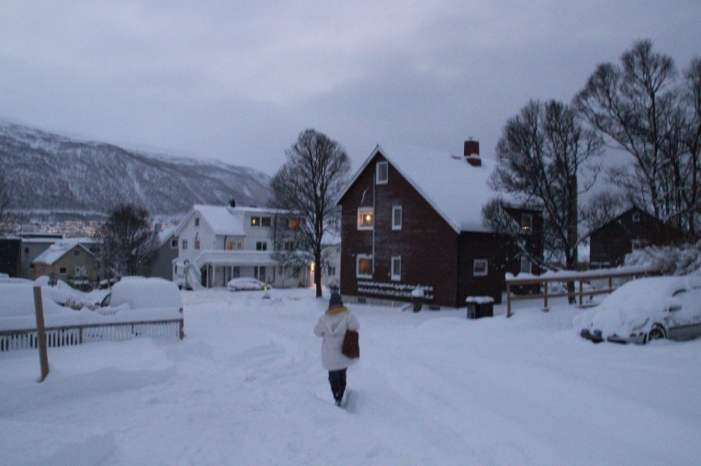
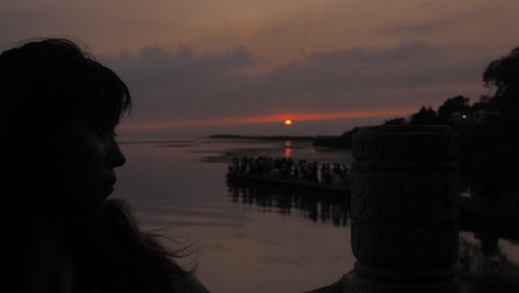
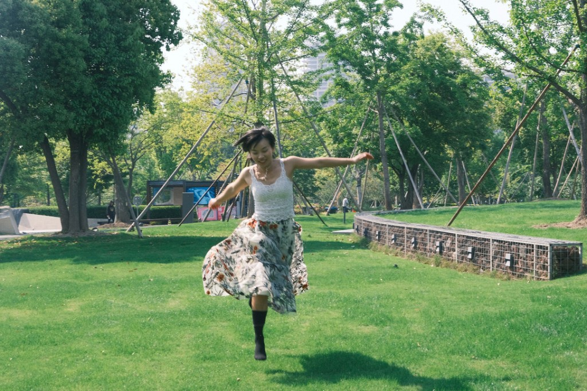
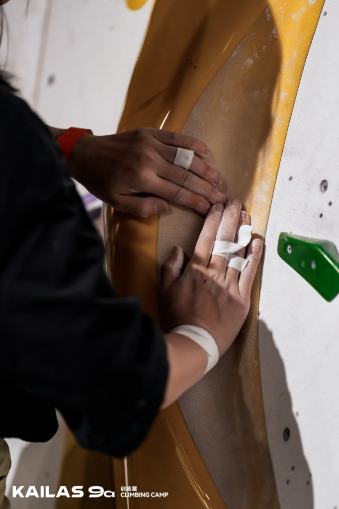
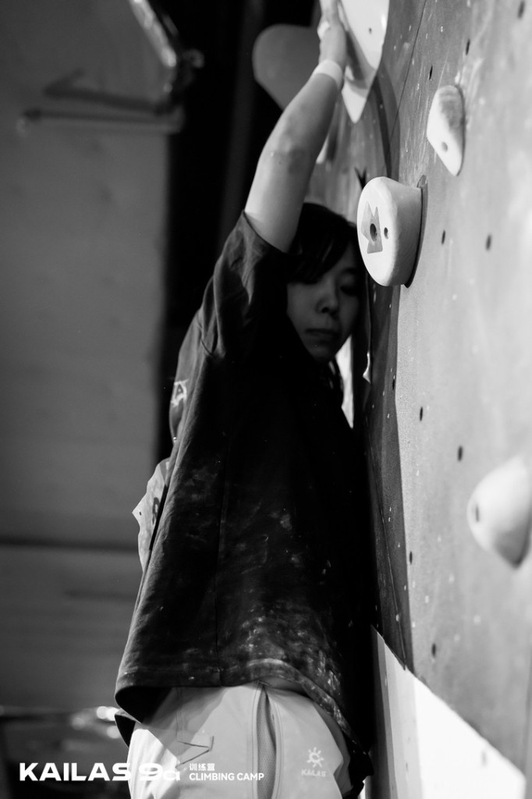
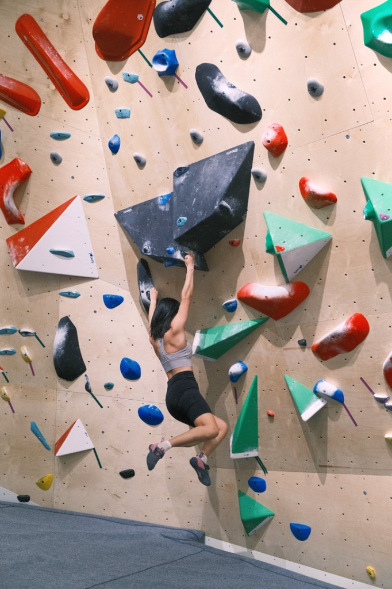

Else 其它
Where I start 关于起点
I prefer not to define myself by labels. People are far more intricate than that, and I am hardly an impartial judge of who I am. If anything is true: I am simply drawn to whatever sparks my curiosity. When a new door opens, I am willing to embrace whatever difficulty comes with stepping through it.
我不习惯用标签定义自己。人远比那要复杂，我也不是那个能客观评判自己的法官。若真要说些什么：我只是对许多事怀抱好奇。当新的可能出现，我愿欣然承载那份随之而来的陌生与挑战。

Farther out 远行与世界
Beyond the routine, I am always on the move—climbing, skiing, reading, and wandering. Seventeen countries and counting. My phone is a quiet archive of unsorted frames; here are just a few, raw and uncatalogued.
越过日常的轨道，我总是在路上——攀岩、滑雪、阅读、远行。足迹走过十七个国家。手机里塞满了还没来得及整理的碎片，这里只挑了几个未经修饰的瞬间。







On the Wall 在岩壁上
I’ve been climbing for seven years. What I like is that it gathers strength, thought, and attention into one practice. This is a beginner’s course I made: Bouldering Basics.
喜欢攀岩已经7年啦。攀岩的乐趣在于，力量、思考、专注的集大成者。这是我做的新手入门课：Bouldering Basics。


